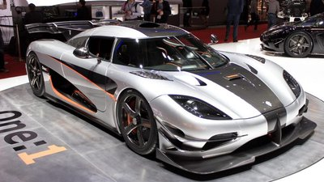
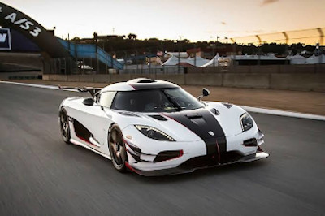

<!DOCTYPE html>
<html lang="pt-br"></html>

<head>
    <title>Homer - Auto Racing Automobilismo</title>
    <meta charset="UTF-8">
    <meta name="viewport" content="width=device-width, initial-scale=1.0">
    <link rel="stylesheet" type="text/css" href="_css/estilo.css">
    <link rel="stylesheet" type="text/css" href="_css/jquery-ui.min.css">
    <script type="text/javascript" src="_js/jquery.js"></script>
    <script type="text/javascript" src="_js/jquery-ui.min.js"></script>
    <script type="text/javascript" src="_js/script.js"></script>
</head>

<body>
    <section id="container">
        <header>
            <h1>Auto Racing Automobilismo</h1>
        </header>

        <nav id="menu">
            <ul type="disc">
                <li><a class="active" href="index.html">Home</a></li>
                <li><a href="multimidia.html">Multimídia</a></li>
                <li><a href="formulario.html">Formulário</a></li>
            </ul>
        </nav>

        <section id="places">
            <article>
                <h2>PRIMEIRO DO MUNDO MEGACAR</h2>
                <p>
                    <i>Atualizado em 08/12/2019, por Michel Costa.</i>
                </p>
                

                <p>
                    O<a href="https://www.koenigsegg.com/car/one1" target="_blank">
                        Koenigsegg One:1
                    </a>
                </p>

                <P>
                    O One: 1 foi introduzido em 2014. Sete exemplos, incluindo um protótipo, foram construídos
                    durante
                    2014 e 2015.
                </P>
                <P>
                    Este foi um dos programas de carros de produção mais exclusivos já previstos na indústria
                    automobilística.
                </P>
                <P>
                    A relação peso-meio-fio hp-kg é surpreendente 1: 1. Esta é a equação do "sonho", anteriormente
                    considerada impossível quando se trata de carros esportivos legais e utilizáveis. O One: 1 é o
                    primeiro carro de produção homologado do mundo com um megawatt de potência, tornando-o na
                    primeira série do mundo produzida Megacar.
                </P>
            </article>

            <article>
                <h2>Assim, o nome Um: 1.</h2>
                
                <p>
                    O
                    <a href="https://www.koenigsegg.com/car/one1" target="_blank">
                        Koenigsegg One:1
                    </a>
                </p>
                <P>
                    O One: 1 realmente elevou a barra de desempenho. O One: 1 apresentou soluções novas e exclusivas
                    que
                    aprimoram o desempenho da faixa sem comprometer a velocidade máxima ou a usabilidade diária, com
                    uma
                    aparência visual impressionante.
                </P>
                <P>
                    Exemplos de recursos: winglets aerodinâmicos otimizados para pistas, túneis venturi estendidos e
                    divisores laterais, configuração de asa ativa inspirada em Le-Mans e ativa otimizada sob
                    gerenciamento de ar de compensação. Grandes respiradouros de ar para melhor resfriamento, tomada
                    de
                    ar no teto para suportar o limite de 1 Megawatt de potência, 8250 RPM, complementado com pneus
                    Michelin Cup personalizados, suspensão Triplex traseira atualizada com molas cônicas de carbono
                    e
                    amortecedores ativos e altura de condução, combinados com revolucionárias rodas de fibra de
                    carbono
                    Koenigsegg Aircore revolucionárias.
                </P>
                <P>
                    A Koenigsegg foi o primeiro fabricante de automóveis extremos a adotar a tecnologia verde com o
                    lançamento do biocombustível CCXR em 2007. O One: 1, um irmão do altamente competitivo Agera R,
                    segue os passos do CCXR, como também é executado no E85 biocombustível, combustível de corrida
                    ou
                    gasolina normal.
                </P>
            </article>
        </section>

        <aside>
            <h2>Carros Históricos</h2>
            <ol>
                <li><a href="https://www.koenigsegg.com/car/agera-rs/" target="_blank">Agera RS.</a></li>
                <li><a href="https://www.koenigsegg.com/car/agera-r/" target="_blank">Agera R.</a></li>
                <li><a href="https://www.koenigsegg.com/car/agera-s/" target="_blank">Agera S.</a></li>
                <li><a href="https://www.koenigsegg.com/car/agera/" target="_blank">Agera.</a></li>
            </ol>
            <audio controls>
                <source src="_media/Tema da Vitória - Ayrton Senna(MP3_160K).mp3" type="audio/mp3">
                Seu navegador não suporta o elemento <code>audio</code>.
            </audio>
        </aside>
    </section>

    <footer>
        <h2>CONTATO</h2>
        <p>Endereço: Rua Visconde de Pirajá, n°151 - Ipanema</p>
        <p>Rio de Janeiro - RJ</p>
        <p>Telefones: +55 (21)97669-1390</p>
        <p>E-mail: michel.mcs.admpf@gmail.com</p>
        <h2>Nossa localização</h2>
        <iframe
            src="https://www.google.com/maps/embed?pb=!1m18!1m12!1m3!1d3673.0652166809314!2d-43.20199238503296!3d-22.98462918497222!2m3!1f0!2f0!3f0!3m2!1i1024!2i768!4f13.1!3m3!1m2!1s0x9bd510a72b2edd%3A0x515bfca497548329!2sR.%20Visc.%20de%20Piraj%C3%A1%2C%20151%20-%20Ipanema%2C%20Rio%20de%20Janeiro%20-%20RJ%2C%2022410-003!5e0!3m2!1spt-BR!2sbr!4v1569355104297!5m2!1spt-BR!2sbr"
            width="600" height="450" frameborder="0" style="border:0;" allowfullscreen=""></iframe>

        <h3>Redes Socias</h3>
        <P>
            <a href="https://www.youtube.com/channel/UCDJaZHSiXofu31kA9W-eEFA?view_as=subscriber"
                target="_blank">Youtube
            </a> |
            <a href="https://www.instagram.com" target="_blank">Instagram
            </a>
        </P>
        <p>&copy; 2019 - Desenvolvido por <i>Michel Costa.</i> Todos os Direitos Reservados</p>
    </footer>

</body>

</html>